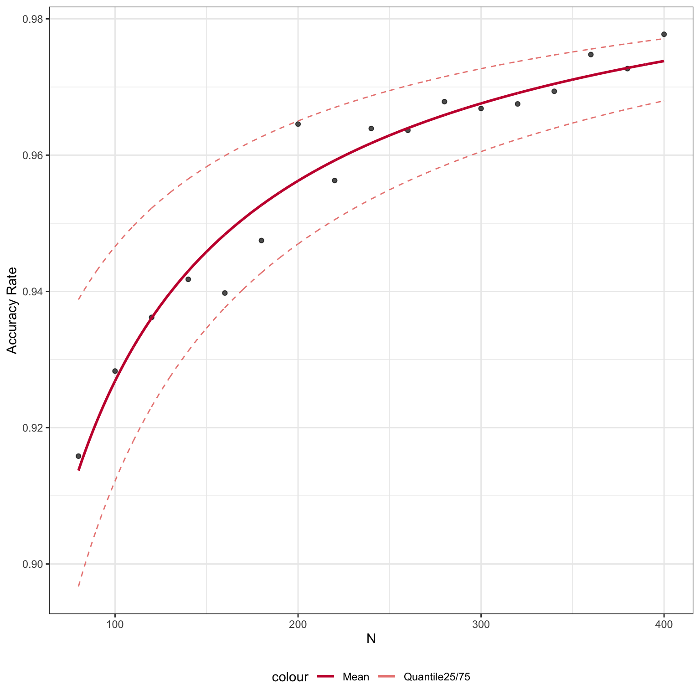
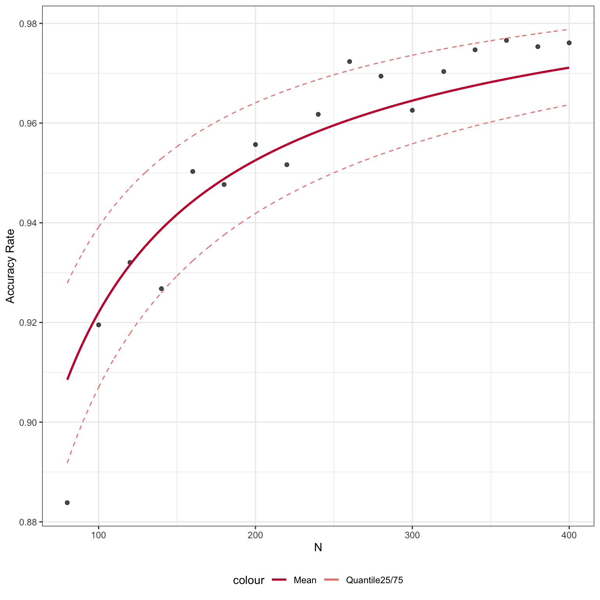

This vignette will provide an example of how we can fit a learning curve based on classification accuracies derived from scClassify.
Suppose we have a small pilot reference data, and we would like to use this reference data to build scClassify model. We can construct the learning curve to estimate the number of cells required in a reference dataset to accurately discriminate between two cell types at a given level in the cell type hierarchy.
Data
Here, we illustrate the learning curve construction with a small example dataset with 4 cell types, with only 980 genes and 674 cells.
library(scClassify) data("scClassify_example") xin_cellTypes <- scClassify_example$xin_cellTypes exprsMat_xin_subset <- scClassify_example$exprsMat_xin_subset exprsMat_xin_subset <- as(exprsMat_xin_subset, "dgCMatrix")
dim(exprsMat_xin_subset) #> [1] 980 674 table(xin_cellTypes) #> xin_cellTypes #> alpha beta delta gamma #> 285 261 49 79
We can first have a look at the cell type tree constructed by the whole data. The cell type tree has two levels of cell type labels:
- First level: “gamma_delta_beta”, “alpha”
- Second level: “gamma”, “delta”, “beta”, “alpha”
data("trainClassExample_xin") trainClassExample_xin #> Class: scClassifyTrainModel #> Model name: training #> Feature selection methods: limma #> Number of cells in the training data: 674 #> Number of cell types in the training data: 4 plotCellTypeTree(trainClassExample_xin@cellTypeTree)

By default, scClassify will construct the learning curve on the basis of classification accuracies calculated at the bottom level (i.e., second level in the example).
Learning curve construction
Next, we can get an accuracy matrix by running runSampleCal function, where the parameter n_list indicates a list of sample sizes (N) that you would like to subsample from the data as the training set, and num_repeat indicates the number of times to repeat this procedure for each N.
For the purpose of illustration, here we set a short length of n_list and a small number of num_repeat. A longer n_list and a larger number of num_repeat is recommended for better learning curve fitting. If you want to run runSampleCal in parallel, for windows users, you can use SnowParam(), and for Macs/Unix users, use MulticoreParam().
set.seed(2019) system.time(accMat <- runSampleCal(exprsMat_xin_subset, xin_cellTypes, n_list = seq(80, 400, 20), num_repeat = 20, BPPARAM = BiocParallel::SerialParam()))
After we obtain an accuracy matrix, we can fit the learning curve by using the learningCurve function.
res <- learningCurve(accMat = accMat, n = as.numeric(colnames(accMat)))
Check the parameters estimated from the average accuracy rates.
res$model$mean #> Nonlinear regression model #> model: acc ~ I(1/n^(c) * a) + b #> data: dat_train #> a.(Intercept) c.log(max(acc) + 0.001 - acc) #> -2.2169 0.7408 #> b #> 1.0000 #> residual sum-of-squares: 0.0002248 #> #> Number of iterations to convergence: 9 #> Achieved convergence tolerance: 1.49e-08
res$plot

Using getN function, we can also estimate a sample size for future experiments given the accuracy rate.
getN(res, acc = 0.95) #> [1] 167
Constructing learning curves based on labels from higher level of the cell type tree
We can input cellType_tree and specify the level of labels we would like to use to construct the learning curve. Here, we set level = 1 to calculate the learning curve for First level cell type labels.
set.seed(2019) system.time(accMat_level1 <- runSampleCal(exprsMat_xin_subset, xin_cellTypes, n_list = seq(80, 400, 20), num_repeat = 20, cellType_tree = trainClassExample_xin@cellTypeTree, level = 1, BPPARAM = BiocParallel::SerialParam())) res_level1 <- learningCurve(accMat_level1, as.numeric(colnames(accMat_level1)), fitmodel = "nls")
res_level1$plot

Session Info
sessionInfo() #> R Under development (unstable) (2020-03-25 r78063) #> Platform: x86_64-apple-darwin15.6.0 (64-bit) #> Running under: macOS Catalina 10.15.4 #> #> Matrix products: default #> BLAS: /Library/Frameworks/R.framework/Versions/4.0/Resources/lib/libRblas.0.dylib #> LAPACK: /Library/Frameworks/R.framework/Versions/4.0/Resources/lib/libRlapack.dylib #> #> locale: #> [1] en_AU.UTF-8/en_AU.UTF-8/en_AU.UTF-8/C/en_AU.UTF-8/en_AU.UTF-8 #> #> attached base packages: #> [1] stats graphics grDevices utils datasets methods base #> #> other attached packages: #> [1] scClassify_0.99.2 #> #> loaded via a namespace (and not attached): #> [1] Biobase_2.47.3 viridis_0.5.1 mixtools_1.2.0 #> [4] tidyr_1.0.2 tidygraph_1.1.2 viridisLite_0.3.0 #> [7] splines_4.0.0 ggraph_2.0.2 RcppParallel_5.0.0 #> [10] assertthat_0.2.1 statmod_1.4.34 stats4_4.0.0 #> [13] yaml_2.2.1 ggrepel_0.8.2 pillar_1.4.3 #> [16] backports_1.1.6 lattice_0.20-41 glue_1.4.0 #> [19] limma_3.43.5 digest_0.6.25 polyclip_1.10-0 #> [22] colorspace_1.4-1 htmltools_0.4.0 Matrix_1.2-18 #> [25] pkgconfig_2.0.3 purrr_0.3.3 scales_1.1.0 #> [28] tweenr_1.0.1 hopach_2.47.0 BiocParallel_1.21.2 #> [31] ggforce_0.3.1 tibble_3.0.0 proxy_0.4-23 #> [34] mgcv_1.8-31 farver_2.0.3 ggplot2_3.3.0 #> [37] ellipsis_0.3.0 BiocGenerics_0.33.3 cli_2.0.2 #> [40] survival_3.1-12 magrittr_1.5 crayon_1.3.4 #> [43] memoise_1.1.0 evaluate_0.14 fs_1.4.1 #> [46] fansi_0.4.1 nlme_3.1-145 MASS_7.3-51.5 #> [49] segmented_1.1-0 tools_4.0.0 minpack.lm_1.2-1 #> [52] lifecycle_0.2.0 stringr_1.4.0 S4Vectors_0.25.15 #> [55] kernlab_0.9-29 munsell_0.5.0 cluster_2.1.0 #> [58] compiler_4.0.0 pkgdown_1.5.1.9000 proxyC_0.1.5 #> [61] rlang_0.4.5 grid_4.0.0 rstudioapi_0.11 #> [64] igraph_1.2.5 labeling_0.3 rmarkdown_2.1 #> [67] gtable_0.3.0 graphlayouts_0.6.0 R6_2.4.1 #> [70] gridExtra_2.3 knitr_1.28 dplyr_0.8.5 #> [73] rprojroot_1.3-2 desc_1.2.0 stringi_1.4.6 #> [76] parallel_4.0.0 Rcpp_1.0.4.6 vctrs_0.2.4 #> [79] diptest_0.75-7 tidyselect_1.0.0 xfun_0.12